- Fläche Deutschland: 357,596 km2
- Fläche Japan: 377,975 km2
- List of metropolitan areas in Europe
- Density map
| City | Country | Population |
|---|---|---|
| Kantō (Tokyo, Yokohama, Kawasaki) | Japan | 37,273,866 |
| Kansai (Osaka, Kobe, Kyoto) | Japan | 19,302,746 |
| Moscow | Russia | 17,217,606 |
| Istanbul | Turkey | 14,693,269 |
| London | United Kingdom | 13,475,297 |
| Rhine-Ruhr | Germany | 12,190,000 |
| Paris | France | 11,249,025 |
| Nagoya | Japan | 9,363,221 |
| Fukuoka-Kitakyushu | Japan | 5,538,142 |
| Berlin | Germany | 4,558,043 |
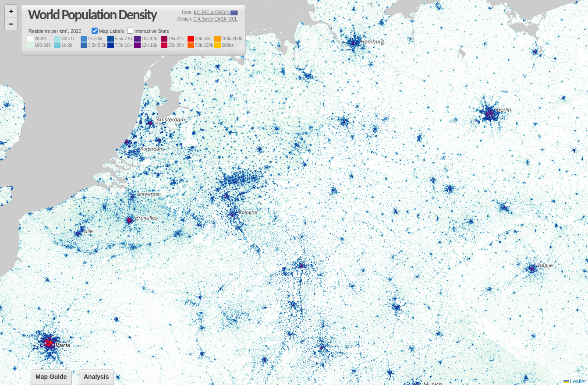
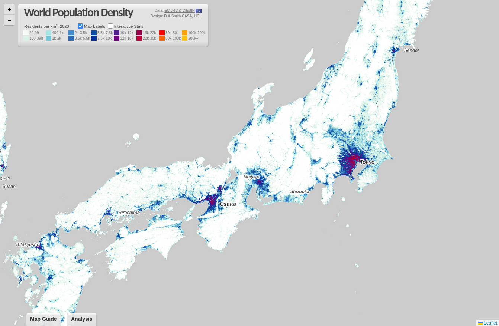
Straßenbild
Strommasten-Chaos wie im Anime
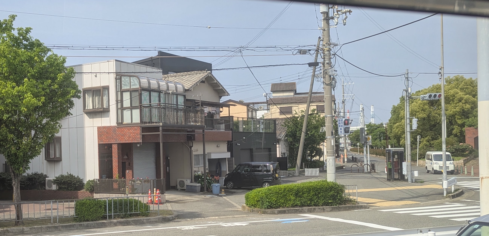
- Werbung braucht ein Pokémon
- keine Mülleimer, aber Leerguteimer
- Kasten Autos
- sehr behindertengerecht: Pissoirs mit Griff, Blindenleitsystem, Rampen
- 2nd hand Läden, insbesondere in Kyōto
- Marktschreier
Menschen
- Anzug mit Rucksack
- immerzu business casual, keine kurzen Hosen
- sehr jung, kaum Übergewicht
Gastronomie
- order by app almost everywhere
- Feuchttücher
- 80 Euro für 5 Personen
- 54 Euro für 4 Personen
- highball
- Leitungswasser mit Eis grundsätzlich umsonst
- cartilage
Stille Örtchen
- bidet
- beheizte Klo Deckel
- Naturgeräusche
- public restrooms no fee
- 1-lagiges Klopapier
May 23
Nakanoshima Rosengarten
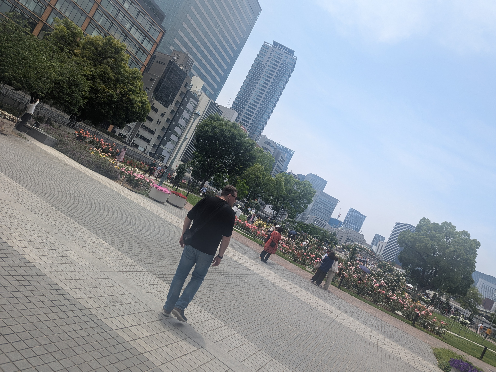


 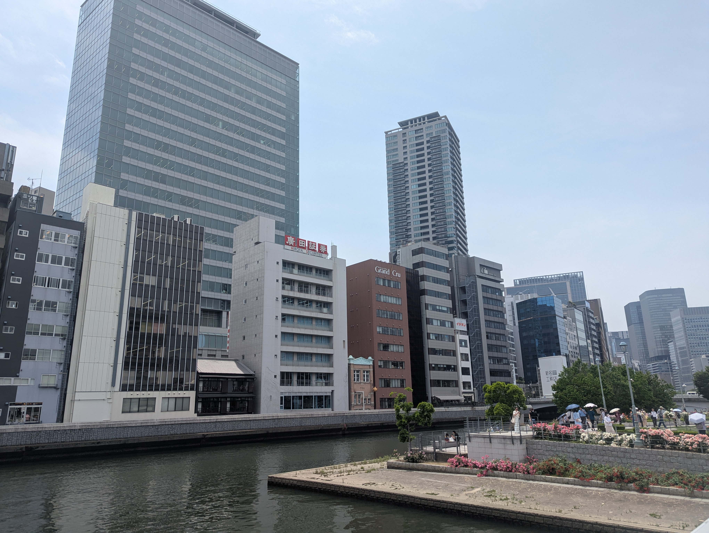
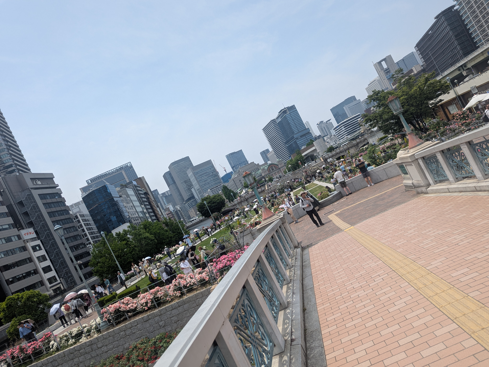
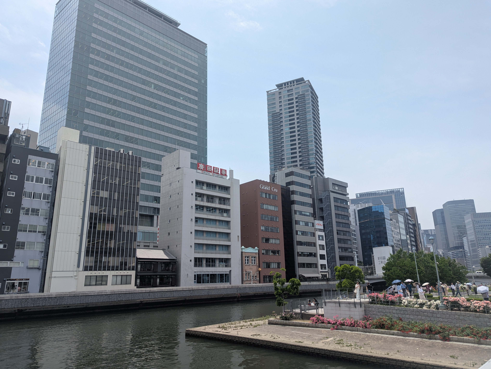
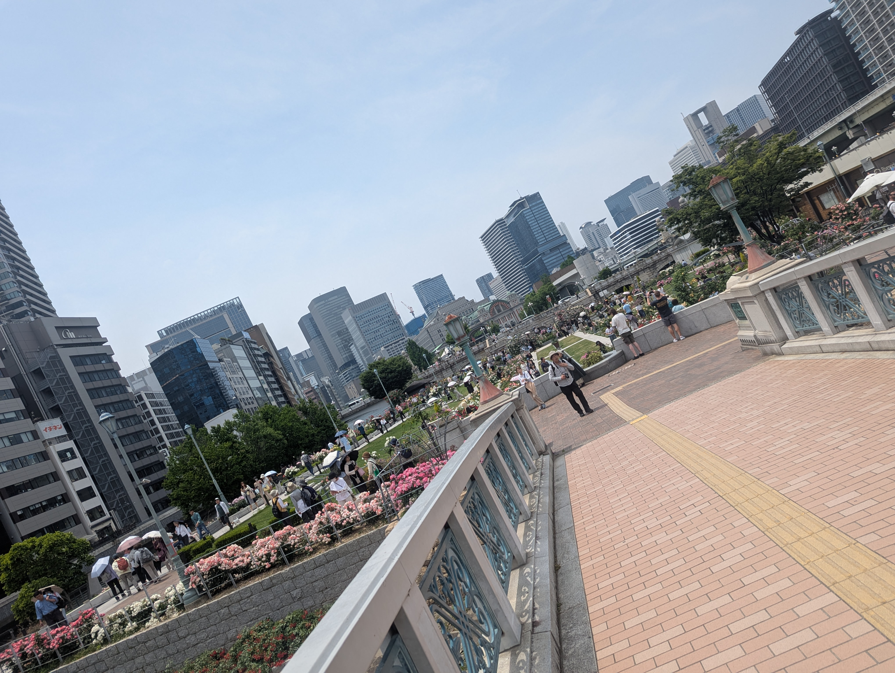
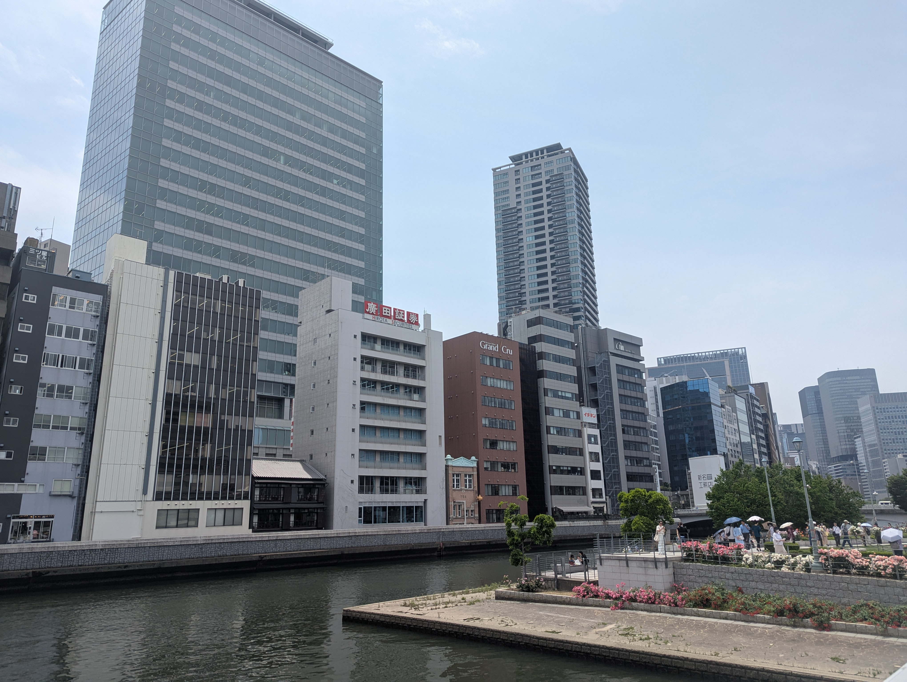
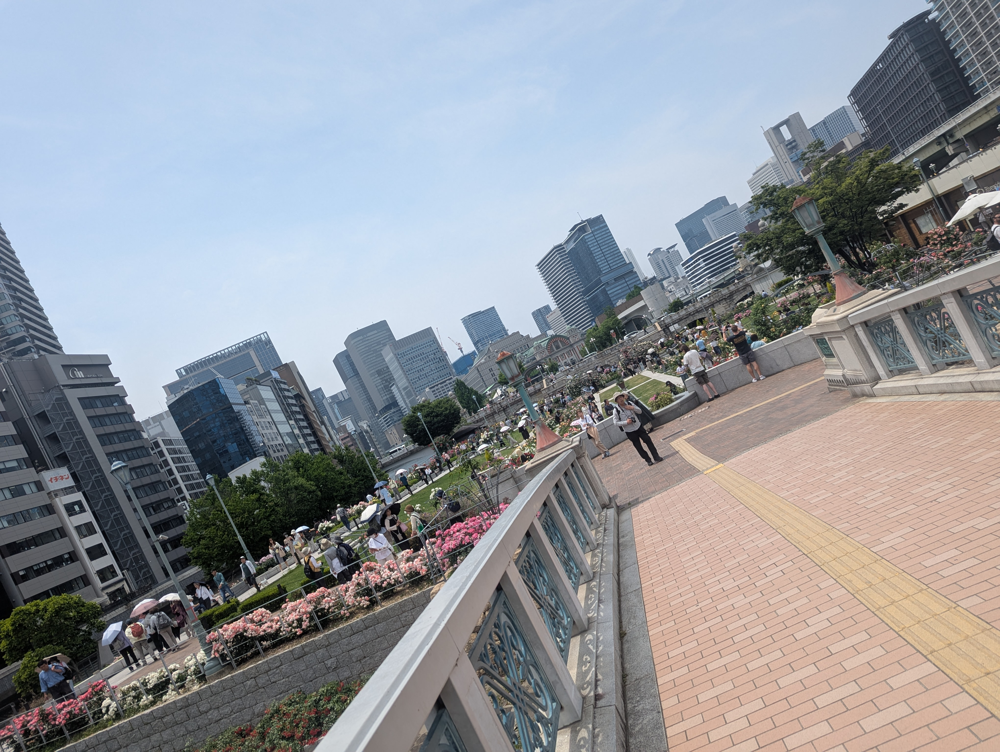
Osaka bei Nacht
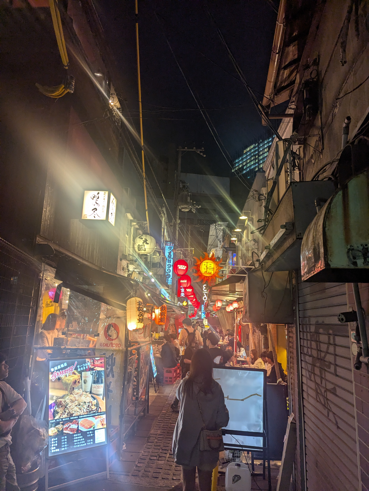
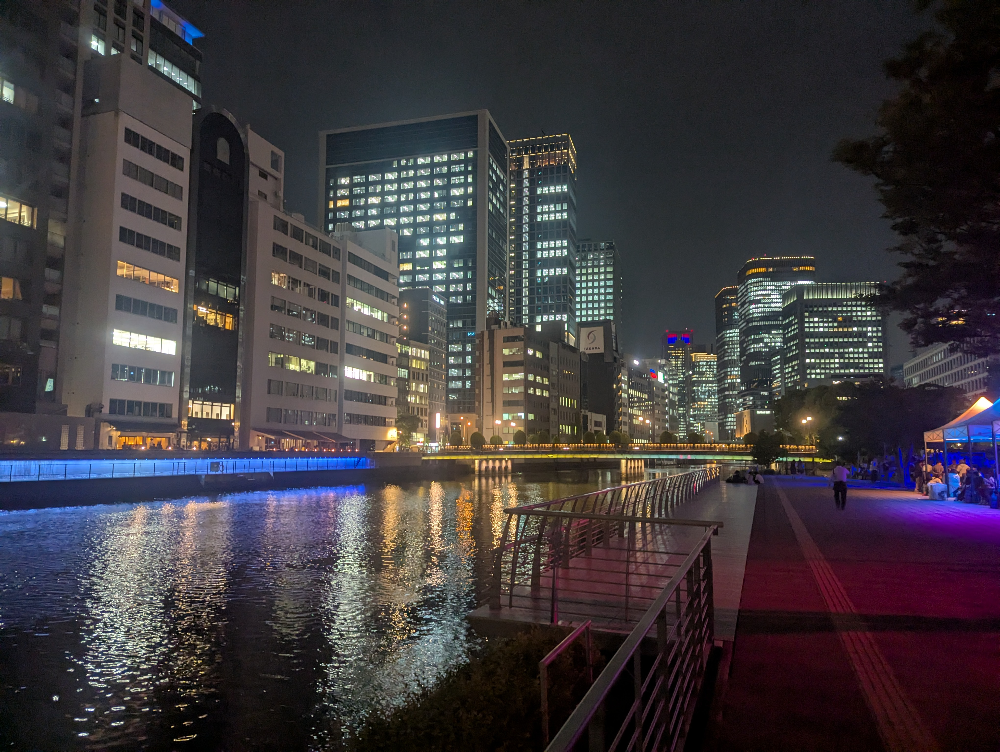
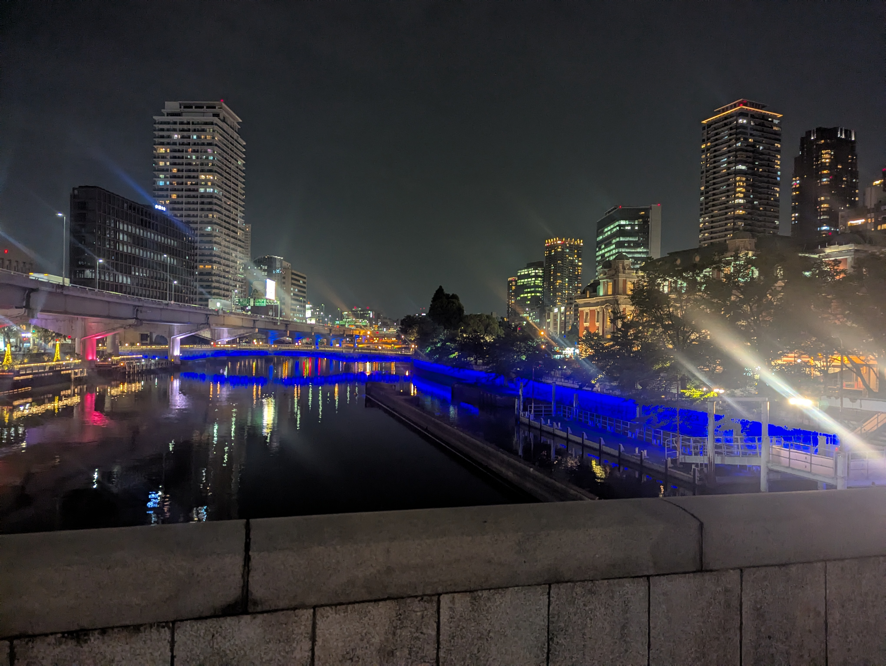
Hotel
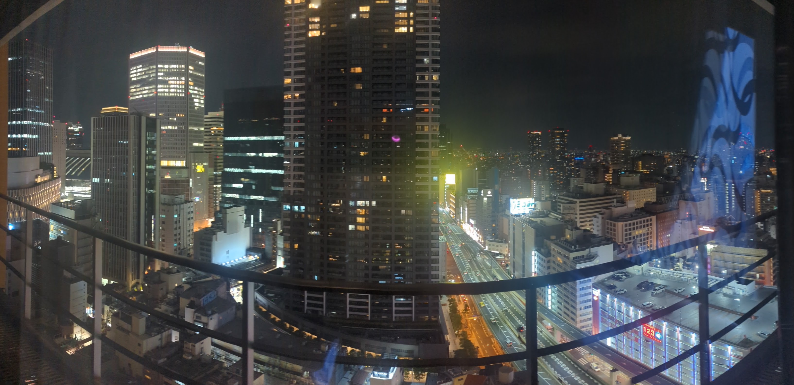